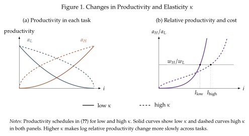

A special case: CES from the assignment of labor to tasks¶
This special case shows that the substitutability of tasks and inputs need not coincide. To make the things simple we start with a Cobb--Douglas aggregator for tasks, so \(\eta=1\) as in (5.2), and then we show that the effective elasticity of substitution between inputs is higher than one. The higher elasticity reflects the fact that the assignment also responds to changes in relative prices.
This model was developed in Acemoglu and Zilibotti (2001) in the context of wage inequality between high and low-skilled workers. Accordingly, we consider two types of labor, with supplies \(L\) and \(H\). Task production is
where we are giving a specific functional form to the task-worker productivity, so that
Relative productivity of \(H\) is \(\frac{A_H}{A_L}\left(\frac{i}{1-i}\right)^{\frac{1}{\kappa}}\), which increases with \(i\). So, worker productivity is such that the low-skill workers have comparative advantage at low-index tasks and high-skill workers at high-index tasks
Group \(L\) therefore produces tasks below a cutoff \(I\), and group \(H\) produces those above it. At the boundary, the two unit costs are equal:
Solving for the lengths of the two task intervals gives
With Cobb--Douglas task demand, every equal-length interval receives the same expenditure. So, integrating over the assigned intervals gives
Effective elasticity¶
Divide the wage bills and then substitute the cutoff condition:
Taking logs, holding technology fixed, and using the same relative-price definition as in our earlier two-input models gives
If assignment were fixed, a higher \(w_H/w_L\) would reduce demand for \(H\)-produced tasks relative to \(L\)-produced tasks with unit elasticity. With endogenous assignment, it also raises \(I\): some tasks move from \(H\) to \(L\). The aggregate response is larger.
The parameter \(\kappa\) makes comparative advantage change more slowly across tasks. This makes them more substitutable in the margin so a given change in relative wages then moves the boundary farther. Indeed,
Figure~Figure 10 compares low \(\kappa\) (solid lines) with high \(\kappa\) (dashed lines). Higher \(\kappa\) raises both groups' productivities (panel a); nevertheless, relative productivity does not change monotonically and varies less sharply around the illustrated cutoffs (panel b), making assignment more responsive to relative wages. At the fixed wage ratio shown, where \(w_H>w_L\), increasing \(\kappa\) moves the cutoff to the right and expands the low-skill task bundle.

Ultimately, we can recover the output as a CES with elasticity \(\sigma=1+\kappa\):
However, the steps are somewhat cumbersome and do not deliver any additional insight. The derivation involves replacing the labor quantities for each task into the continuous Cobb-Douglas aggregator. The labor quantities satisfy
which, replaced into the aggregator give
Solving these integrals delivers the CES representation.